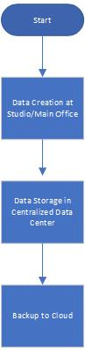
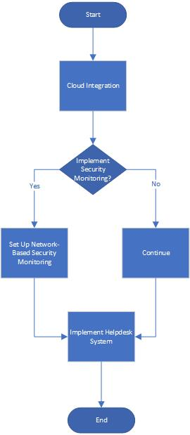

Project Overview
Conducted a comprehensive digital transformation for Image Crafters Photography Company, enhancing their IT infrastructure and security.
Field Analysis
The Image Crafters Photography Company is poised for a significant digital transformation. As the company expands its footprint, it becomes imperative to stay abreast of the latest trends in information technology, particularly in networking and security. This analysis will delve deeper into these trends, the skills required for IT professionals, and how these align with the company's overarching business objectives.
Conceptual Network Design
- Centralized Data Center: Centralizing data ensures efficient data management and backup.
- Cloud Integration: Cloud solutions offer scalability, flexibility, and are particularly beneficial for backup and disaster recovery.
- VPN Connectivity: A Virtual Private Network (VPN) will connect the main office and the studio, ensuring secure and seamless data transfer.
- Advanced Firewalls and IDS: These tools prevent unauthorized access and monitor network traffic for suspicious activities.
- Regular Security Audits: Periodic assessments identify vulnerabilities, ensuring the network's integrity.
Relevance to the Photography Company
The digital age has transformed photography from a purely artistic endeavor to a technologically-driven one. Clients now demand online access to portfolios, secure storage for their photos, and swift digital deliveries. The aforementioned IT trends, especially cloud integration and VPNs, ensure the company can meet these demands efficiently. Moreover, with the increasing threats to digital data, robust security measures are not just an IT requirement but a business necessity to maintain client trust.
Technical Knowledge, Skills, and Abilities for IT Students
- Networking: Understanding of LAN, WAN, VPN, and other networking concepts.
- Cloud Computing: Knowledge of IaaS, PaaS, and SaaS and their applications.
- Security: Proficiency in firewalls, intrusion detection systems, and encryption methods.
- Operating Systems: Familiarity with Windows, macOS, Linux, and their server counterparts.
- Programming: Basic coding skills, especially in scripting for network tasks.
Soft Skills for IT Students
- Communication: Ability to explain technical concepts to non-technical stakeholders.
- Teamwork: Collaborate effectively in diverse teams.
- Problem-solving: Identify, analyze, and resolve IT-related issues.
- Adaptability: Stay updated with the rapidly evolving IT landscape.
- Customer Service: Address user issues with patience and understanding, emphasizing the importance of interpersonal skills in the IT field.
Conclusion
For Image Crafters Photography Company to stay competitive, it's essential to leverage the latest IT trends, especially in networking and security. Equally important is ensuring that IT professionals, whether current or aspiring, possess both the technical know-how and the soft skills to implement and manage these technologies effectively.
Business Proposal
The business proposal outlines a strategic plan for the digital transformation of Image Crafters Photography Company. It includes a comprehensive analysis of current IT infrastructure and recommendations for improvements. Click here to read the full Business Proposal.
- Executive Summary: The proposal outlines the strategic plan to transition Image Crafters into the digital realm, ensuring competitiveness and security.
- Company Background: Image Crafters is a leader in the photography industry, transitioning from in-person services to digital solutions.
- Business Justification: Digital transformation enhances operational efficiency, meets client demands, and bolsters security.
- Project Description: Includes centralized data management, cloud integration, secure connectivity, OS upgrades, and advanced security measures.
- Cost Estimate: Preliminary estimate of $45,000, with detailed breakdown provided in the attached file.
- Time Estimates: Project to span six months, with specific timelines for each initiative.
- Business Areas Impacted: Client services, data management, security, and operational efficiency.
Revised Design Specification
This section provides a comprehensive overview of the revised design specification for the digital transformation of Image Crafters Photography Company. Click here to read the full Revised Design Specification document.
Project Introduction
Summary of the Photography Company and its Services: Image Crafters Photography Company offers premium photography services, capturing moments and creating memories for its clientele. The company has been a significant player in the industry, known for its quality and commitment.
Description of the Current Situation and Limitations: The company currently relies on outdated IT infrastructure, which hampers its efficiency and ability to cater to modern client demands. There's a pressing need for digital transformation to stay competitive.
Changes Desired by the Photography Company: The company aims to shift entirely to cloud-based solutions, eliminating the need for on-site servers. They also wish to enhance their security measures, both digitally and physically, and introduce a helpdesk system for efficient issue resolution.
Hardware/Software
Cloud-Based Solutions:
- Cloud Service: Subscription to services like AWS, Google Cloud, or Azure for storage, backup solutions, and computing needs.
- Cloud Management Tools: Tools provided by the cloud service provider for data management, backup scheduling, and disaster recovery.
Network-Based Security Monitoring System:
- Security Cameras: IP-based cameras for monitoring company premises.
- Monitoring Software: Cloud-based software solutions for real-time monitoring, recording, and alerts.
Help Desk Software:
- Ticketing System: Cloud-based helpdesk software like Zendesk or Freshdesk to allow employees to submit support tickets.
- Communication Tools: Integrated chat and email tools for seamless communication between the helpdesk analyst and employees.
Personnel
Help-Desk Analyst:
- Role: Address support tickets, assist employees with IT-related issues, and maintain the helpdesk software.
- Skills: Proficiency in IT troubleshooting, familiarity with the chosen helpdesk software, excellent communication skills, and customer service orientation.
Operational Considerations
Security Risk Assessment:
- Digital Security: Regular audits, penetration testing, and vulnerability assessments to ensure the cloud infrastructure's security.
- Physical Security: Regular checks of the security camera feeds, ensuring cameras are operational, and setting up alerts for any suspicious activities.
Digital Transformation
The document details the digital transformation initiatives undertaken for Image Crafters Photography Company, focusing on the integration of modern technologies to improve business operations. Click here to read the full Digital Transformation document.
- Project Goals and Objectives: Implement centralized data management, integrate cloud solutions, establish secure VPN connectivity, upgrade operating systems, and enhance security measures.
- Project Deliverables: Centralized data center, cloud integration, VPN setup, OS upgrades, and advanced security measures.
- Project Requirements: Detailed requirements for each deliverable, including hardware setup, data migration, training, and security configuration.
- Cost Breakdown: Detailed cost breakdown provided in the attached Excel file.
- Roles and Responsibilities: Project manager, IT team, security specialist, training coordinator, and quality assurance team.
- Acceptance Criteria: Successful implementation, achievement of project objectives, positive staff feedback, and no security breaches post-implementation.
Hardware and Software
This section provides a comprehensive list of all hardware and software needed for the project, including those for end-users. Click here to read the full Comprehensive Analysis document.
- Centralized Data Center: Servers, storage devices, cooling systems.
- Cloud Integration: Cloud service subscription (5TB storage with redundancy).
- VPN Connectivity: VPN hardware and software licenses for 50 users.
- Advanced Firewalls and IDS: Enterprise-grade firewall and IDS software.
- Operating System: Windows Server licenses for data center.
Existing Hardware/Software to Retain
- The company's current workstations, while requiring OS upgrades, will be retained.
- Any proprietary software specific to photography editing and management will be retained and updated if necessary.
Business Justification
- Centralized Data Center: Streamlines operations and ensures efficient data management.
- Cloud Integration: Offers scalability and disaster recovery.
- VPN: Ensures secure data transfer.
- Firewalls and IDS: Bolsters security against potential threats.
- OS Upgrades: Enhances workstation performance, ensures software compatibility, and addresses potential security vulnerabilities in older OS versions.
Status Update Report
This section provides a comprehensive overview of the status update for the digital transformation of Image Crafters Photography Company. Click here to read the full Status Update Report document.
- Project Progress: Details the milestones achieved, tasks completed, and any delays encountered.
- Current Status: Provides a snapshot of the project's current state, including percentage completion and key activities.
- Challenges and Issues: Highlights any significant challenges or issues faced during the project and the measures taken to address them.
- Upcoming Tasks: Outlines the tasks planned for the next phase of the project and their expected timelines.
- Resources: Lists the resources utilized and any additional resources required for the project.
Proposal for Integration of Competitor's Location
This section outlines the necessary steps and associated costs to integrate the competitor's location into the primary site's network infrastructure. Click here to read the full Proposal document.
Introduction
This proposal outlines the necessary steps and associated costs to integrate the competitor's location into the primary site's network infrastructure. Our goal is to ensure seamless connectivity, upgrade outdated equipment, enhance physical security, and provide a clear understanding of the timeline impact.
Connectivity between Locations
- Internet Connection: Establish a high-speed broadband connection at the competitor's location. Cost: Approx. $50/month (depending on the service provider).
- VPN (Virtual Private Network): Set up a VPN to securely connect the competitor's location to the primary site, ensuring data privacy and security. Equipment: VPN Router. Cost: Approx. $200 for the router + $20/month for VPN service.
Equipment Upgrades
- Replace Windows XP Computer: Windows XP is outdated and poses security risks. We recommend replacing it with a modern computer system. Cost: Approx. $800 for a new desktop computer.
- Order Management System: Implement a digital order management system to replace paper order forms, improving efficiency and reducing errors. Cost: Approx. $500 for software + training.
Physical Security Measures
- Surveillance Cameras: Install CCTV cameras at key points to monitor the premises. Cost: Approx. $400 for a basic 4-camera system.
- Alarm System: Implement a security alarm system to alert in case of unauthorized access. Cost: Approx. $300 for installation + $20/month for monitoring.
- Access Control: Install electronic locks on the front and back doors, allowing only authorized personnel access. Cost: Approx. $200.
Timeline Impact
The integration process, including equipment upgrades and security enhancements, is expected to add 3-4 weeks to the overall project timeline.
Additional Considerations
- Training: Staff at the competitor's location will require training on the new systems and software. This could take an additional week and cost around $500.
- Data Migration: Customer data from the Windows XP computer must be migrated to the new system. This process will take approximately two days and cost around $200.
Conclusion
The estimated cost for integrating the competitor's location is approximately $3,000 (excluding recurring monthly expenses). While there is an added cost and timeline extension, the benefits of streamlined operations, enhanced security, and potential business growth from the acquisition make it a worthwhile investment. Note: All costs mentioned are approximate and may vary based on vendor selection, location specifics, and market fluctuations.
Business Memo
This section provides an overview of the business memo related to the network design specification changes for budget reduction. Click here to read the full Business Memo document.
Memo Details
Date: 9/28/2023
To: Upper Management, Image Crafters Photography Company
From: Kenneth Delliber, Project Manager, Network Design Team
Subject: Changes to Network Design Specification for Budget Reduction
Introduction
In light of the recent request to reduce the project budget by at least 15%, we have revisited our Network Design Specification and identified areas where cost savings can be achieved without compromising the project's core objectives. This memo outlines the proposed changes and their implications.
Proposed Changes and Cost Savings
- Cloud-Based Solutions: By transitioning to cloud-based services, we can eliminate the need for on-site servers, reducing hardware, maintenance, and upgrade costs.
- Open-Source Software: Wherever feasible, we will utilize open-source software alternatives, which offer robust features without the licensing costs of proprietary software.
- Optimized Network Equipment: We will prioritize essential network equipment and explore cost-effective alternatives for non-critical components.
Note: Detailed cost breakdown and savings are attached in the updated Network Design Specification.
Potential Negative Impacts
- Cloud-Based Solutions: Relying solely on cloud services might lead to potential downtimes if there are issues with the cloud service provider. However, we will ensure that we choose reputable providers with a track record of high uptime.
- Open-Source Software: While cost-effective, open-source software might require more in-house expertise for customization and troubleshooting.
Adverse Effects on Project Goals
The proposed changes aim to achieve cost savings while meeting all project goals. However, the staff might have a slight learning curve in adapting to new software or platforms. We will mitigate this by providing adequate training and support.
Conclusion
The proposed changes to the Network Design Specification aim to achieve the desired budget reduction while ensuring that the project's objectives are not compromised. With careful implementation and ongoing support, we believe these changes will benefit the company financially and operationally.
Personnel
This section provides details about the required personnel for the project's successful implementation. Click here to read the full Comprehensive Analysis document.
- Project Manager: Oversees the project, ensures timelines are met, and coordinates between various teams.
- IT Team: Handles the technical aspects of the project, including hardware setup, software installation, and data migration.
- Security Specialist: Focuses on implementing security measures and conducting regular assessments.
- Training Coordinator: Provides training to staff on new systems and technologies.
- Quality Assurance Team: Ensures that all deliverables meet the required standards and function as expected.
Operational Considerations
Security risk assessment and mitigation measures are critical to ensure the safety and integrity of the company's data and operations. Click here to read the full Security Risk Assessment document.
- Digital Security: Regular audits, penetration testing, and vulnerability assessments to ensure the cloud infrastructure's security.
- Physical Security: Regular checks of the security camera feeds, ensuring cameras are operational, and setting up alerts for any suspicious activities.
Network Diagrams
The following diagrams illustrate the proposed network design for the digital transformation of Image Crafters Photography Company.
Flowchart - Data Management Process
Image Crafters Network Diagram

Flowchart - Week 5
Helpdesk Flowchart

Network Diagram (Revised)
.jpg)
Network Diagram 2

Revised Network Diagram
This section includes the revised network diagram showing the updated connections. Click here to view the full Revised Network Diagram.
The diagram illustrates how the primary site and competitor's location are interconnected through a cloud connection, with the cloud provider serving as an external connection point.